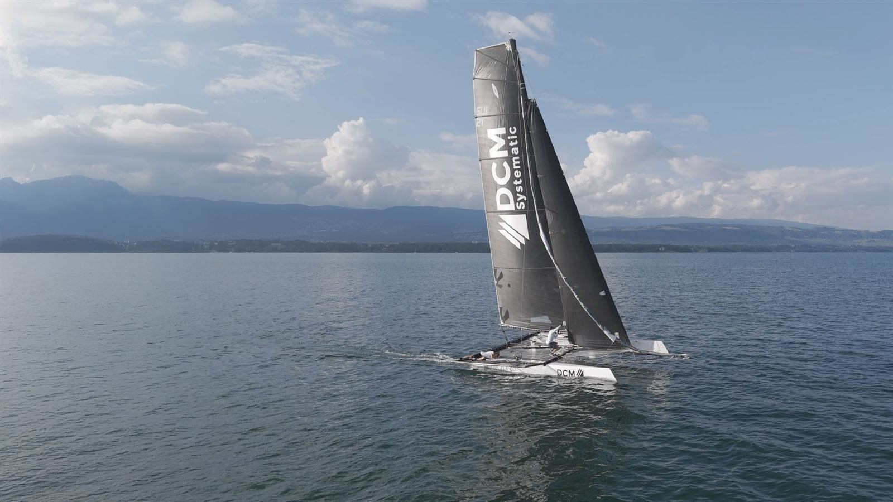

DCM Systematic
Two months on the operations side of a Geneva multi-strategy systematic fund, turning fund data, reporting and the investor pipeline into automated, reconciled workflows in Python, and giving the business development team numbers it could rely on.
95%
Report processing time cut
90%
Fewer reconciliation errors
$190m+
Prospect AuM pipeline consolidated
raw fund data→
cleaning→
reconciliation→
7 report types
python | 3 strategies | 13 share classes
- Fund reporting. Built an internal Python application that cleans and reconciles fund data and produces 7 report types across 3 strategies and 13 share classes. Alongside it, supported fund accounting on fee accruals, NAV checks and expense allocation.
- CRM and pipeline. The fund was expanding across 20+ countries in APAC and LATAM, and its business development CRM needed consolidating. Cleaned and merged 9,300+ records and audited engagement, pipeline, DDQ and lead-status data, bringing USD 190m+ of potential AuM back into view for re-engagement.
- Dashboards and LLM workflows. Built the recurring BD KPI dashboard from HubSpot data, cutting its production time by 90%, and developed LLM-based workflows for fund reporting that were adopted by the full BD team and the Board.
- Investor portal. Contributed to the architecture and data integration of the investor and DDQ portal, and computed quarterly commissions for third-party marketers.
